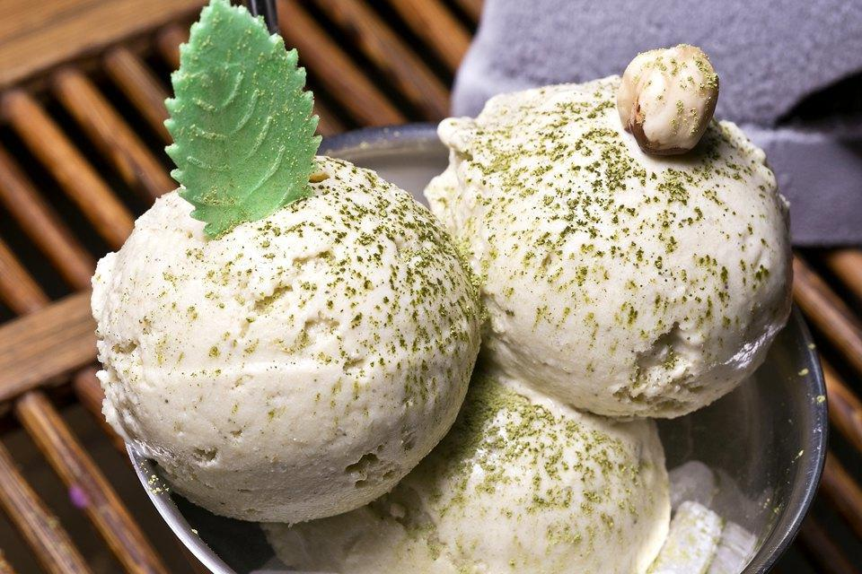
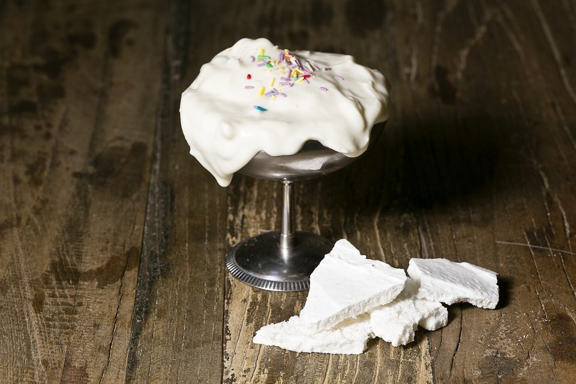
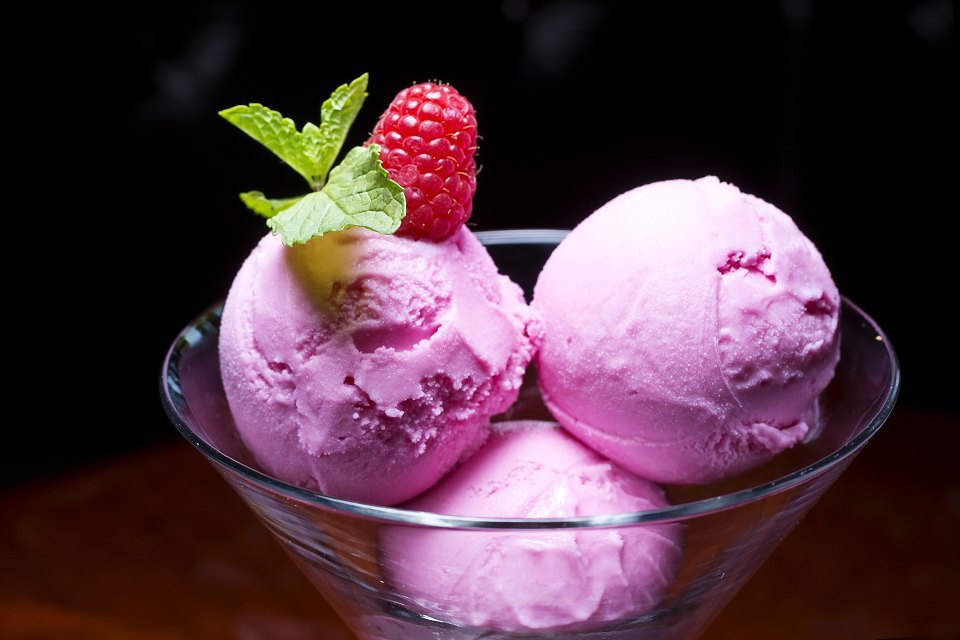

Виды мороженого
Оттенки белого
«В „Оттенки белого“ мы добавляем цветы белой сирени из-под Ульяновска. Но главная опора здесь — перекликание вкусов немецкого марципана из горького миндаля и сладкого белого вина Сотерн. Это самый быстро придуманный и реализованный рецепт — идея пришла мне в голову, и через полчаса первая партия была уже готова (всё необходимое оказалось под рукой). Я просто собрал оттенки белого и сладкого, которые по душе людям с развитым вкусом.
Рампл из фенхелевой меренги с лимонным кремом и мороженым
Это не столько мороженое, сколько десерт. Он выглядит, может, даже будто бы помятым, но мне нравится, таким он и был задуман.
Предыстория десерта такова: как-то раз в клипе Экшена Бронсона я увидел десерт „Банана-сплит“, всё текло, но было очень красиво. Я решил сделать что-то подобное и сложил вместе несколько своих любимых компонентов: лимон и анис. Тем более что это очень летние вкусы: анис холодит, а лимон бодрит.
Фиалковое мороженое
«Во Франции, в Тулузе, фиалку в разных формах используют во многих блюдах, а так как я в „Стрелке“ готовлю как раз блюда этого региона, решил сделать из фиалки и мороженое.